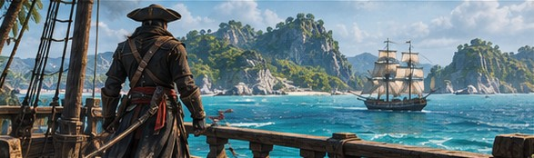

Protagonista
Edward Kenway
Un corsario galés que busca fortuna y termina implicado en una guerra secreta.
El Caribe de la Edad de Oro de la Piratería es el escenario de la historia de Edward Kenway, un corsario ambicioso que se ve envuelto en el conflicto entre Asesinos y Templarios. El mar abierto se convierte en el gran protagonista de la aventura.
El Caribe de la Edad de Oro de la Piratería es el escenario de la historia de Edward Kenway, un corsario ambicioso que se ve envuelto en el conflicto entre Asesinos y Templarios. El mar abierto se convierte en el gran protagonista de la aventura.
Este dossier reúne los personajes, el contexto histórico, los lugares y las actividades que definen esta entrega. La información está organizada para descubrir el juego sin perderse entre sus distintas capas.
Las figuras que dan forma a la historia de Assassin’s Creed IV: Black Flag.

Un corsario galés que busca fortuna y termina implicado en una guerra secreta.
Figura histórica vinculada a la piratería, conocida en la aventura bajo otra identidad.
Pirata cuya ambición y conocimiento lo convierten en una pieza clave.
Primer oficial del Jackdaw y personaje central en el recorrido de Edward.
Caribe · 1715–1722 · Una recreación histórica que combina acontecimientos reales y ficción.
Edward persigue riquezas y oportunidades en el Caribe, pero sus decisiones lo acercan a una red de conspiraciones que involucra a piratas, imperios y organizaciones secretas. La campaña alterna aventuras en tierra y grandes travesías navales.
Regiones, ciudades y escenarios que dan personalidad a esta aventura.
Ciudad española fortificada y centro de poder colonial.
Refugio pirata en las Bahamas y símbolo de la república de los corsarios.
Puerto comercial bajo influencia británica.
Un mundo abierto de islas, naufragios, fuertes y rutas marítimas.
Los sistemas principales que definen la forma de jugar esta entrega.
Mejorar el barco, su casco, cañones y armamento.
Abordar barcos, debilitarlos con cañones y capturar recursos.
Explorar pecios y ruinas submarinas.
Obtener materiales de animales terrestres y marinos.
Combate rápido y ataques encadenados.
Enviar barcos capturados a misiones comerciales.
Qué hacemos durante la aventura, cómo exploramos el mundo y qué sistemas conviene dominar.
Explorar islas, descubrir atalayas, localizar fuertes, seguir mapas del tesoro, bucear en pecios, cazar animales, reunir fragmentos del Animus y mejorar el Jackdaw antes de enfrentarse a navíos más poderosos.
Detalles y sistemas especiales que merece la pena descubrir durante la exploración.
Los fragmentos del Animus desbloquean mejoras y contenido relacionado con el presente.
Los mapas del tesoro conducen a cofres ocultos en islas y asentamientos.
Las canciones marineras se pueden recoger y después cantar a bordo del Jackdaw.
ARCHIVO EN AMPLIACIÓN · Se añadirán ubicaciones concretas y capturas propias a medida que se complete la documentación de cada juego.
Es una de las entregas más reconocidas por su navegación, libertad de exploración y ambientación pirata.